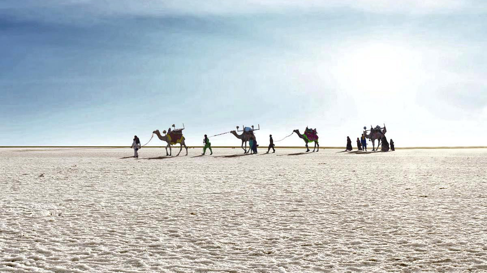

Rann of Kutch is a massive expanse of cracked earth, inland from the sea, that promises to take your breath away. The nothingness for miles is both nerve wracking and stunning with small oasis of water bodies and shrub forests doubling up as homes for pink flamingoes and wild asses. Tribal hamlets with cylindrical mud bhungas (huts) are the epicenter for Kutchi embroidery, tie and dye, leatherwork, pottery, bell metal craft and the famous Rogan painting by the only surviving expert family. Approximately 200 km east of the Rann, is the Little Rann of Kutch, which houses the 4953-sq-km Wild Ass Sanctuary. It homes the only remaining population of the chestnut-coloured Indian wild ass (khur), as well as blue-bulls, blackbuck and chinkara.
Brief History
The area was a once a sprawling shallow of the Arabian Sea until a constant geological shift closed off the connection with the sea. Over the years, the region eventually became a seasonal marshy salt desert. During monsoons, the marsh fills up with water and the wetland extends from the Gulf of Kutch on the west through to the Gulf of Cambay on the east. In the summers, the water dries to create a crunchy based bed of white salty land.

How to Get There?
By Road
Ahmedabad is 335 ilometers from bhuj approx. driving time is 7 hours . Rann of Kutch is about 85 kilometres from Bhuj.
By Train
Bhuj is the closest air and rail node to Rann of Kutch, at 85 kilometers.
By Air
The Rudra Mata airport at Bhuj is a small but busy node that connects Mumbai to Bhuj.